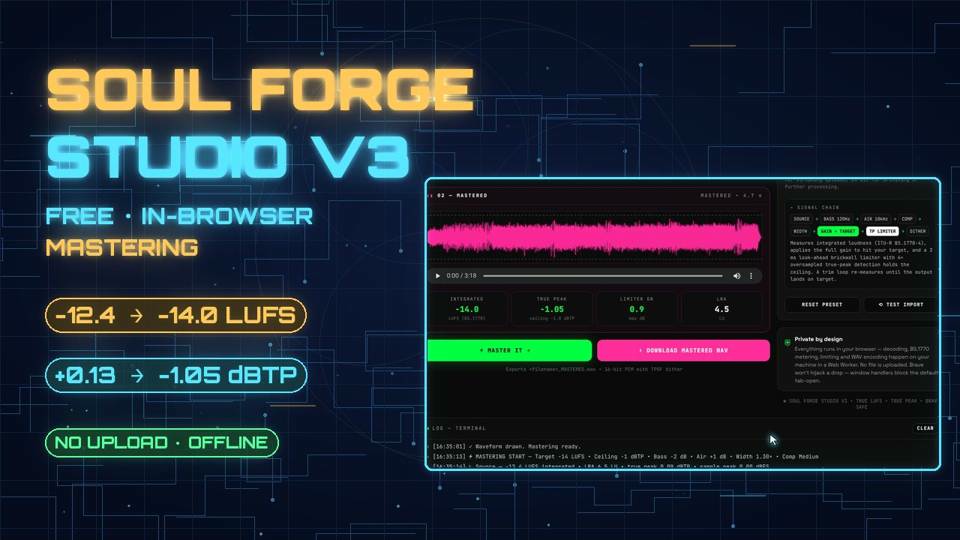

Live in your browser
Soul Forge Studio V3
Free in-browser audio mastering. Drop a track, press MASTER IT, download a WAV. It measures integrated loudness (ITU-R BS.1770-4) and 4× oversampled true peak, then lands on −14 LUFS with a look-ahead limiter. Everything runs locally in your browser. Nothing is uploaded.
Single self-contained HTML file, no network requests.
Python command-line tools
master.py masters WAVs to −14 LUFS (EQ, limiter, stereo width), one file or a whole folder. ab_play.py flips between original and mastered in the terminal. Install: pip install numpy soundfile pyloudnorm pedalboard librosa scipy, then run python3 master.py song.wav or python3 master.py --batch my_folder/.